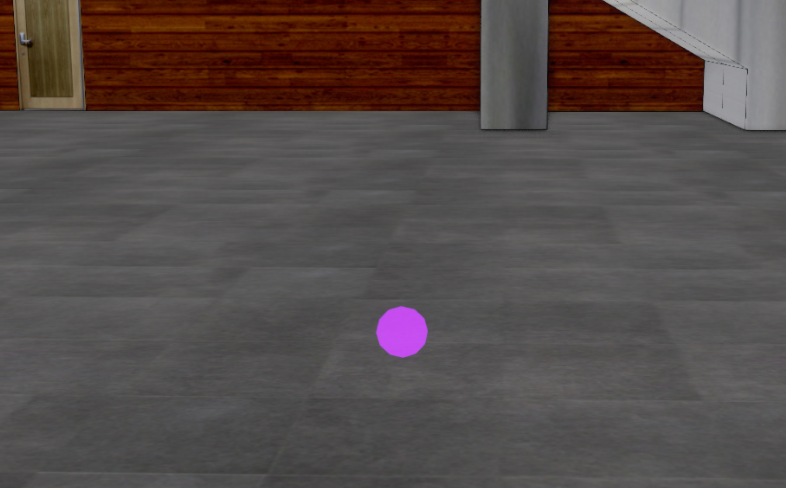
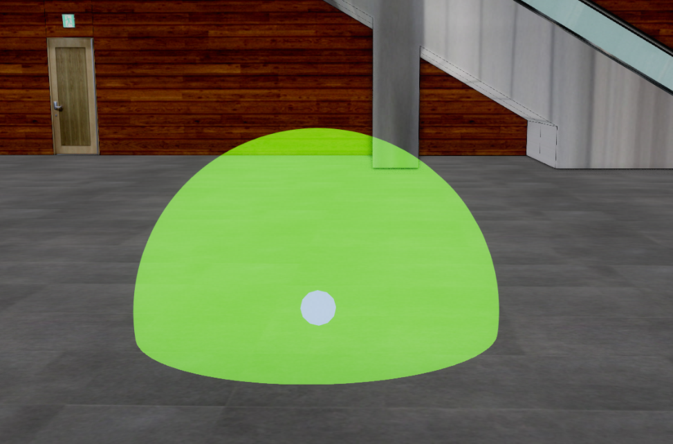
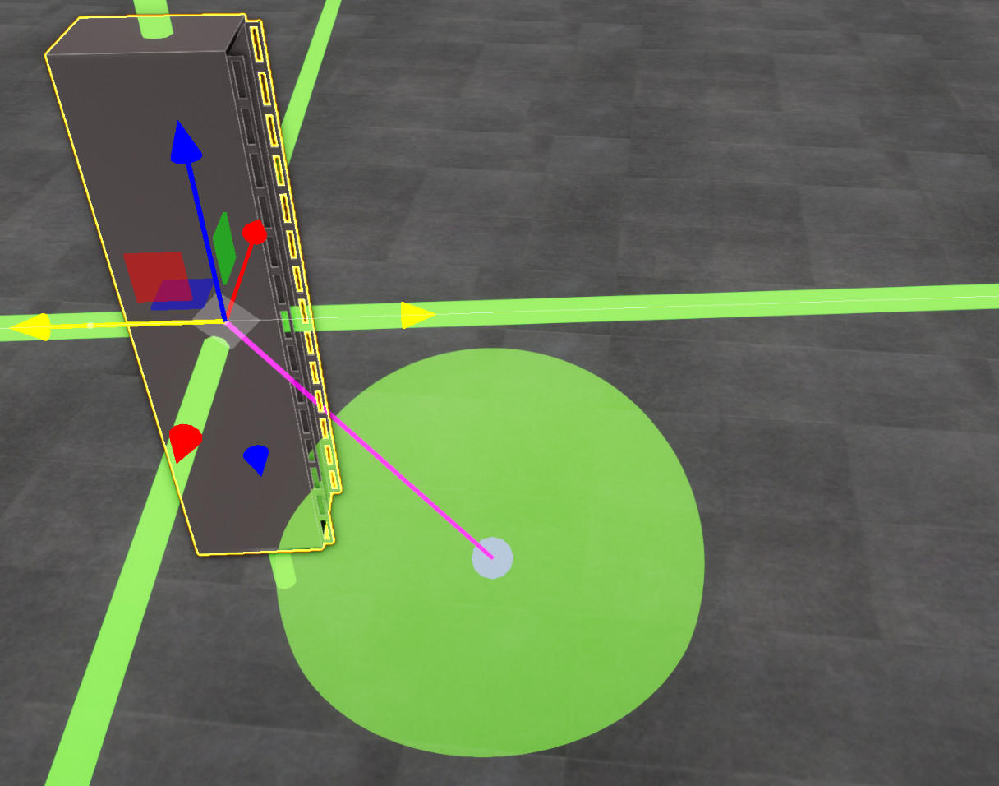
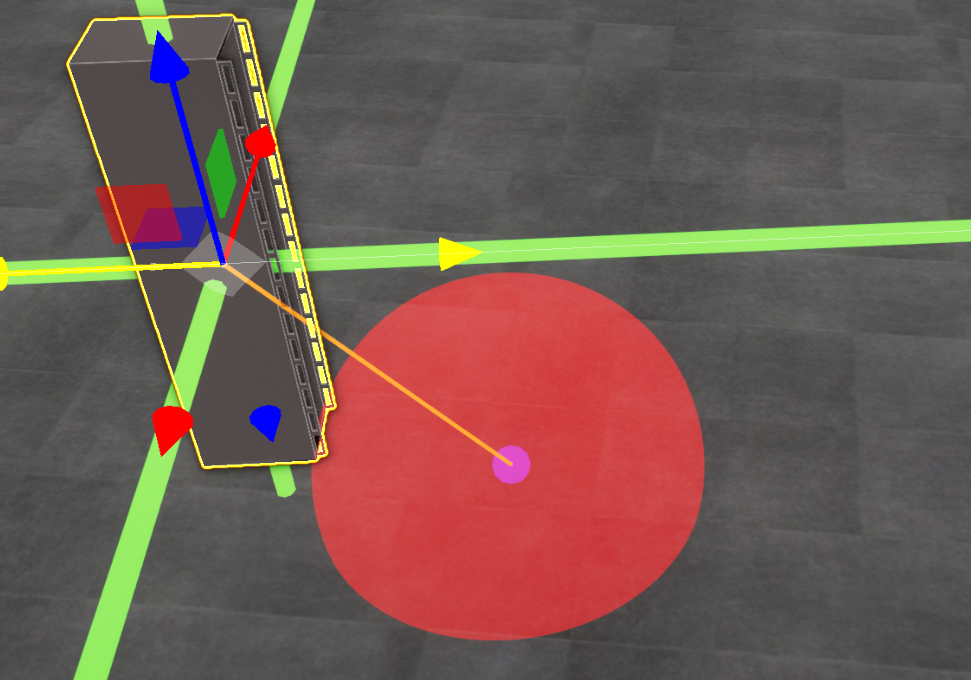

어댑터 생성
목차
U3dAdaptedGeometry는 3D 사물을 특정 위치에 맞춰 배치할 때 사용하는 구 형태의 어댑터입니다. 어댑터의 인식 범위 안에 좌표나 사물이 들어왔는지 검사하고, 교차한 사물을 어댑터 위치로 이동시키는 스냅 기능을 구현할 수 있습니다.
이 문서의 예제는 app이 생성되어 있다고 가정합니다. 벡터 레이어를 만드는 자세한 방법은 3D Geometry 시작하기 - 벡터 레이어 생성하기, 어댑터에 연결할 U3dComponentPosition을 만드는 방법은 3D 사물 생성을 참고하세요.
1. 어댑터 생성하기
U3dAdaptedGeometry 생성자로 어댑터를 만들고 U3dVectorLayer.addGeometry()로 벡터 레이어에 등록합니다. 등록한 뒤 setPosition()에 경도, 위도, 높이를 전달해 어댑터 위치를 지정합니다.
어댑터의 실제 인식 반지름은 radius × buffer입니다. 예를 들어 radius: 1, buffer: 10이면 중심에서 반지름 10m 범위를 검사합니다.
API
U3dAdaptedGeometry(opt) : 구 형태의 어댑터 객체를 생성하는 생성자
매개변수
opt(object) : 어댑터 생성 옵션opt.name(string) : 어댑터 이름. 기본값:''opt.radius(number) : 어댑터 본체의 반지름(m). 기본값:5opt.buffer(number) : 인식 범위를 결정하는 반지름 배율. 기본값:10opt.available(boolean) : 생성 직후 교차 검사를 활성화할지 여부. 기본값:trueopt.color(ColorRepresentation) : 어댑터 본체 색상. 기본값:'#ff0000'opt.opacity(number) : 어댑터 본체 투명도(0~1). 기본값:1opt.boundColor(ColorRepresentation) : 인식 범위 표시 색상. 기본값:'#fff000'opt.lineColor(ColorRepresentation) : 연결선 색상. 기본값:'#ff0000'opt.lineThick(number) : 연결선 두께opt.widthSegments(number) : 구의 수평 분할 수. 기본값:8opt.heightSegments(number) : 구의 수직 분할 수. 기본값:6opt.properties(KeyValue) : 사용자 정의 속성. 기본값:{}
API
U3dVectorLayer.addGeometry(geom) : 벡터 레이어에 어댑터를 등록하는 함수
매개변수
geom(U3dGeometry) : 등록할 어댑터 객체
API
U3dAdaptedGeometry.setPosition(x, y, z) : 위경도 좌표로 어댑터 위치를 지정하는 함수
매개변수
x(number | Vector3) : 경도.Vector3를 전달하면 좌표 객체 하나로 지정합니다y(number) : 위도z(number) : 높이(m)
1. 어댑터 생성 예제
const vectorLayer = new GeOnDT.vector.U3dVectorLayer({
name: 'adapterLayer'
});
app.addLayer(vectorLayer);
app.showLayer('adapterLayer', true);
const adapter = new GeOnDT.geom.U3dAdaptedGeometry({
name: 'adapter_01',
radius: 1,
buffer: 10,
available: true,
color: '#ff8000',
opacity: 1,
boundColor: '#76ff00',
lineColor: '#e712f6',
lineThick: 2,
properties: {
용도: '어댑터'
}
});
vectorLayer.addGeometry(adapter);
adapter.setPosition(126.9393, 37.5194, 1);


2. 어댑터 활성화 및 비활성화하기
비활성화된 어댑터는 모든 교차 검사에서 undefined를 반환합니다. 화면에서는 유지하면서 스냅 기능만 잠시 중지할 때 setAvailable(false)를 사용합니다.
API
U3dAdaptedGeometry.setAvailable(available) : 어댑터의 교차 검사 활성 상태를 설정하는 함수
매개변수
available(boolean) :true이면 활성화하고false이면 비활성화합니다. 불리언이 아닌 값은 반영되지 않습니다
API
U3dAdaptedGeometry.getAvailable() : 현재 교차 검사 활성 상태를 반환하는 함수
반환값
- (
boolean) : 활성화되어 있으면true, 비활성화되어 있으면false
1. 어댑터 비활성화 후 다시 활성화하기
adapter.setAvailable(false);
if (!adapter.getAvailable()) {
console.log('어댑터의 교차 검사가 중지되었습니다.');
}
adapter.setAvailable(true);
3. 교차 검사하기
어댑터는 월드 좌표, 바운딩 박스 또는 3D 객체와 인식 범위가 겹치는지 검사할 수 있습니다. 교차하면 거리와 어댑터 객체를 담은 결과를 반환하고, 교차하지 않거나 어댑터가 비활성 상태이면 undefined를 반환합니다.
교차 결과의 형태는 다음과 같습니다.
{
distance: number,
object: U3dAdaptedGeometry
}
1. 월드 좌표와 교차 검사하기
intersectPosition()에는 EPSG:3857 월드 좌표를 전달합니다. 위경도 좌표를 직접 전달하면 안 됩니다. 다음 예제는 이미 생성한 component의 월드 위치를 사용합니다.
API
U3dAdaptedGeometry.intersectPosition(position) : 월드 좌표가 어댑터 인식 범위와 교차하는지 검사하는 함수
매개변수
position(WorldPosition) : 검사할 월드 좌표(EPSG:3857)
반환값
- (
U3dAdaptedIntersectResult | undefined) : 교차하면{distance, object}를, 교차하지 않으면undefined를 반환합니다
// component는 U3dComponentPosition 객체입니다.
const worldPosition = component.getPosition();
const positionHit = adapter.intersectPosition(worldPosition);
if (positionHit) {
console.log('좌표 교차 거리:', positionHit.distance);
console.log('교차한 어댑터:', positionHit.object);
}
2. 바운딩 박스와 교차 검사하기
API
U3dAdaptedGeometry.intersectBox(box) : 바운딩 박스가 어댑터 인식 범위와 교차하는지 검사하는 함수
매개변수
box(THREE.Box3) : 검사할 월드 바운딩 박스
반환값
- (
U3dAdaptedIntersectResult | undefined) : 교차하면{distance, object}를, 교차하지 않으면undefined를 반환합니다
const componentBox = component.getBoundingBox();
const boxHit = adapter.intersectBox(componentBox);
if (boxHit) {
console.log('바운딩 박스 교차 거리:', boxHit.distance);
}
비어 있거나 유효하지 않은 바운딩 박스를 전달하면 undefined를 반환합니다.
3. 3D 객체와 교차 검사하고 위치 맞추기
intersectObject()는 객체의 월드 바운딩 박스를 계산해 인식 범위와의 교차 여부를 검사합니다. 객체 하나 또는 객체 배열을 전달할 수 있습니다.
API
U3dAdaptedGeometry.intersectObject(object) : 3D 객체가 어댑터 인식 범위와 교차하는지 검사하는 함수
매개변수
object(THREE.Object3D | THREE.Object3D[]) : 검사할 객체 또는 객체 배열
반환값
- (
U3dAdaptedIntersectResult | undefined) : 교차하면{distance, object}를, 교차하지 않으면undefined를 반환합니다
API
U3dAdaptedGeometry.getPosition() : 어댑터의 현재 월드 위치를 반환하는 함수
반환값
- (
THREE.Vector3) : 부모 객체의 변환까지 적용된 어댑터 월드 위치
const objectHit = adapter.intersectObject(component);
if (objectHit) {
const adapterPosition = objectHit.object.getPosition();
component.setPosition(adapterPosition);
}
여러 어댑터를 검사할 때는 교차 결과의 object를 사용하면 실제로 교차한 어댑터 위치에 사물을 맞출 수 있습니다.
4. 어댑터 스타일 설정하기
어댑터 본체, 인식 범위, 연결선의 색상과 투명도 및 선 두께를 각각 변경하거나 setStyle()로 한 번에 설정할 수 있습니다.
API
U3dAdaptedGeometry.setColor(color) : 어댑터 본체 색상을 설정하는 함수
매개변수
color(ColorRepresentation) : CSS 색상 문자열, 16진수 숫자 또는THREE.Color객체
API
U3dAdaptedGeometry.setOpacity(opacity) : 어댑터 본체 투명도를 설정하는 함수
매개변수
opacity(number) : 투명도(0~1).0은 완전 투명,1은 불투명
API
U3dAdaptedGeometry.setBoundColor(color) : 현재 표시된 인식 범위의 색상을 설정하는 함수
매개변수
color(ColorRepresentation) : 인식 범위 색상
API
U3dAdaptedGeometry.setLineColor(color) : 현재 생성된 연결선의 색상을 설정하는 함수
매개변수
color(ColorRepresentation) : 연결선 색상
API
U3dAdaptedGeometry.setLineThick(lineThick) : 연결선 두께를 설정하는 함수
매개변수
lineThick(number) : 연결선 두께. 선에 적용될 때 최솟값은0.001
API
U3dAdaptedGeometry.setStyle(style) : 어댑터 스타일을 한 번에 설정하는 함수
매개변수
style(U3dAdaptedStyleParam | string) : 변경할 스타일 객체 또는 JSON 문자열style.color(ColorRepresentation) : 어댑터 본체 색상style.opacity(number) : 어댑터 본체 투명도(0~1)style.boundColor(ColorRepresentation) : 인식 범위 색상style.lineColor(ColorRepresentation) : 연결선 색상style.lineThick(number) : 연결선 두께
1. 스타일을 개별 설정하기
adapter.setColor('#fff000');
adapter.setOpacity(0.5);
adapter.setBoundColor('#fff000');
adapter.setLineColor('#ff8000');
adapter.setLineThick(3);
setBoundColor()와 setLineColor()는 인식 범위 또는 연결선이 이미 생성되어 있을 때 즉시 반영됩니다. 교차 전에 적용할 초기 색상은 생성자의 boundColor, lineColor 옵션으로 지정하세요.
2. 스타일을 한 번에 설정하기
adapter.setStyle({
color: '#f279e6',
opacity: 0.8,
boundColor: '#ff0000',
lineColor: '#ff8000',
lineThick: 3
});
setStyle()은 JSON 문자열도 받을 수 있지만, 잘못된 JSON은 파싱 오류를 발생시킬 수 있으므로 객체 사용을 권장합니다. 전달하지 않은 속성은 기존 값을 유지합니다.


5. 어댑터 제거하기
더 이상 사용하지 않는 어댑터는 등록했던 벡터 레이어에서 제거합니다. removeGeometry()는 어댑터 본체뿐 아니라 인식 범위와 연결선에 사용된 리소스도 함께 정리합니다.
API
U3dVectorLayer.removeGeometry(geom) : 벡터 레이어에서 어댑터를 제거하고 관련 리소스를 해제하는 함수
매개변수
geom(U3dGeometry) : 제거할 어댑터 객체
1. 어댑터 제거 예제
vectorLayer.removeGeometry(adapter);